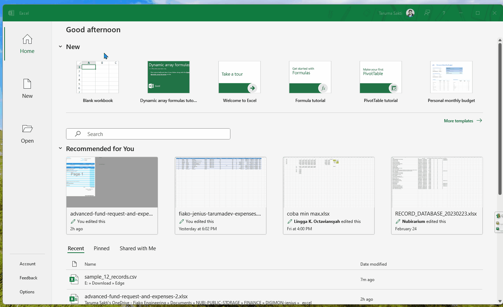
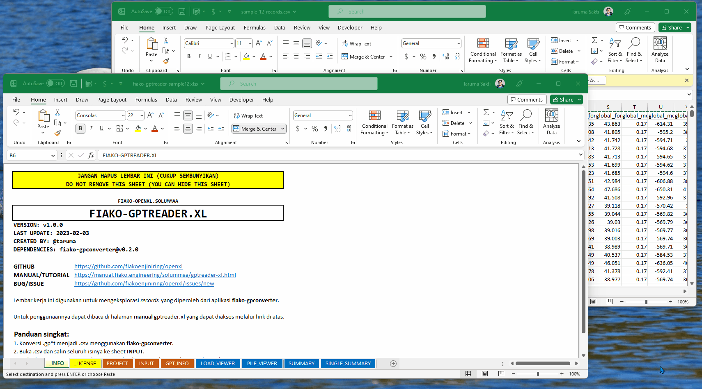
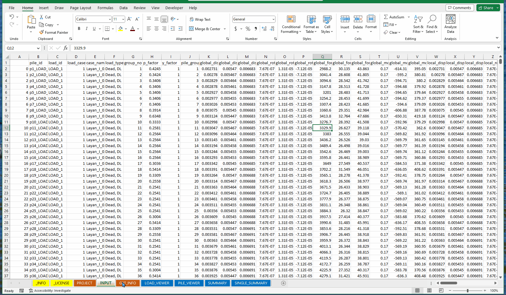
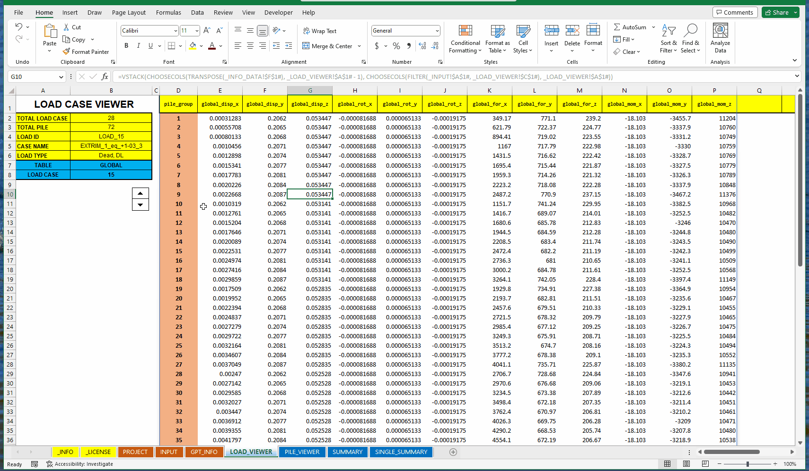
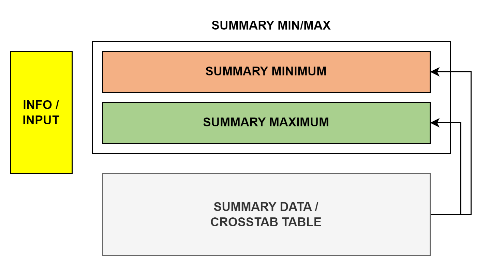
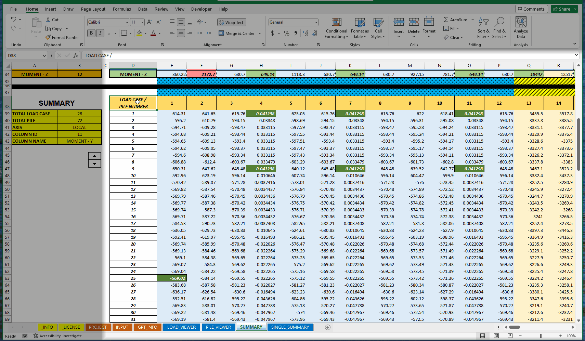
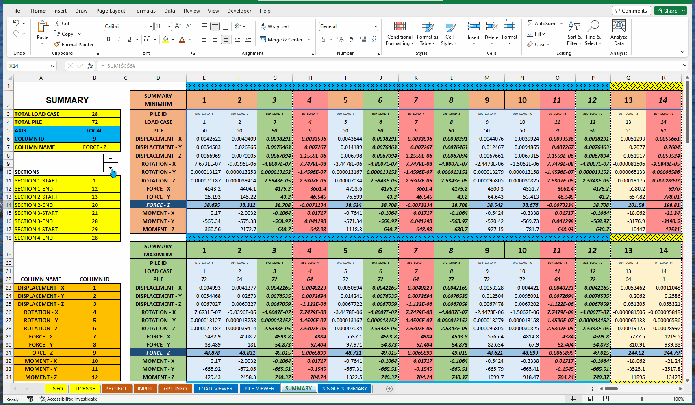

FIAKO-GPTREADER.XL
Lembar kerja excel untuk membaca summary GROUP


1 INFO
fiako-gptreader.xl merupakan lembar kerja (workbook) Microsoft Excel yang digunakan untuk mengeksplorasi data terstruktur summary GROUP yang diperoleh dari aplikasi fiako-gpconverter. Lembar kerja ini dapat digunakan sebagai starter template.
Lembar kerja fiako-gptreader.xl hanya bisa dibuka dan dijalankan menggunakan Microsoft Excel 365 (v2301+) karena menggunakan fitur dynamic array dan LAMBDA. Aplikasi ini diuji dengan menggunakan keluaran .csv aplikasi fiako-gpconverter versi v0.2.0.
2 FITUR
Berikut fitur yang tersedia di lembar kerja fiako-gptreader.xl:
- Mengeksplorasi tabel reactions, displacements, lateral yang tersedia di
.gp*t(summary). - Eksplorasi tabel setiap load case pada sheet / lembar LOAD_VIEWER.
- Eksplorasi tabel setiap pile pada sheet / lembar PILE_VIEWER.
- Melihat rangkuman untuk setiap load case dan pile untuk variabel reactions atau displacements. Rangkuman menunjukkan nilai minimum dan maksimum setiap load case dan setiap kategori. Rangkuman dapat dilihat di lembar SUMMARY.
- Melihat rangkuman seperti SUMMARY untuk meninjau satu variabel di lembar SINGLE_SUMMARY.
3 PERSIAPAN
Berikut yang harus dipersiapkan sebelum menggunakan lembar kerja fiako-gptreader.xl:
- Gunakan aplikasi web
fiako-gpconverteruntuk mengubah file.gp*tmenjadi.csv(Download Records (CSV)). - Pastikan dapat membuka dokumen
.csvmenggunakan Microsoft Excel. Jika tidak teratur otomatis, dapat dibuka melalui FILE > OPEN > berkas.csv(ubah tipe file ke untuk menampilkannya). Seperti yang ditampilkan di Gambar 3.1.

.csv dengan Microsoft Excel.4 PENGGUNAAN
Penggunaan lembar kerja fiako-gptreader.xl dibagi menjadi dua bagian yaitu pengaturan dan eksplorasi.
4.1 Pengaturan
Sebelum mengeksplorasi data summary dari GROUP, perlu pengaturan berupa memindahkan informasi dari .csv ke lembar kerja fiako-gptreader.xl. Berikut langkah yang perlu dilakukan dalam tahap pengaturan.
- Pastikan langkah persiapan sudah dilakukan dan berhasil.
- Buka berkas
.csvmenggunakan Microsoft Excel (lihat langkah persiapan). - Buka lembar kerja
fiako-gptreader.xlsx. - Pertama kalinya membuka lembar kerja
fiako-gptreader, terdapat beberapa sheet / lembar yang perlu diketahui.- Lembar/sheet berwarna KUNING/YELLOW seperti lembar _INFO dan _LICENSE merupakan lembar informasi. Lembar informasi dapat disembunyikan dan selalu ditandai dengan garis bawah (
_) didepan nama lembar. Disarankan untuk tidak menghapus lembar tersebut untuk memastikan versi lembar kerja yang digunakan dan peringatan lisensinya. - Lembar/sheet berwarna COKLAT/BROWN seperti lembar PROJECT, INPUT, dan GPT_INFO merupakan lembar masukan/input.
- Lembar/sheet berwarna BIRU/DARK BLUE seperti lembar LOAD_VIEWER, PILE_VIEWER, SUMMARY, dan SINGLE_SUMMARY merupakan lembar eksplorasi.
- Lembar/sheet berwarna KUNING/YELLOW seperti lembar _INFO dan _LICENSE merupakan lembar informasi. Lembar informasi dapat disembunyikan dan selalu ditandai dengan garis bawah (
Pada bagian pengaturan akan fokus pada lembar input yaitu lembar PROJECT, INPUT, dan GPT_INFO.
4.1.1 Lembar PROJECT
Lembar PROJECT ditujukan untuk tempat menyimpan informasi metadata mengenai proyek/data yang akan dieksplorasi. Lembar PROJECT tidak terhubung dengan kalkulasi ataupun eksplorasi sama sekali, lembar ini hanya ditujukan sebagai catatan tambahan terkait data yang digunakan.
4.1.2 Lembar INPUT
Lembar INPUT merupakan lembar penting karena data hasil dari konversi fiako-gpconverter akan disimpan pada lembar ini. Berikut langkah-langkah dalam mengisi lembar ini dengan data hasil konversi fiako-gpconverter:
- Pastikan lembar INPUT tidak terisi sama data sekali. Bisa dilakukan pembersihan dengan buka lembar INPUT, blok seluruh sel menggunakan
Ctrl+A, kemudian hapus dengan tombolDeleteatau pilih opsiHOME > EDITING > Clear > Clear All. - Setelah terbukanya berkas
.csvmenggunakan Microsoft Excel. Blok seluruh data menggunakanCtrl+Akemudian salin/copy dengan shortcutCtrl+C. - Buka lembar kerja
fiako-gptreader.xl, dan buka lembar INPUT. - Paste data yang telah disalin ke lembar INPUT. Pastikan data dimulai dari
A1(pojok kiri atas).
Instruksi diatas dapat dilihat pada Gambar 4.1.

Setelah menyalin data ke lembar kerja fiako-gptreader.xl pada lembar INPUT, data sudah siap dieksplorasi. Akan tetapi terdapat tahap tambahan di lembar GPT_INFO yaitu menentukan batasan/kelompok setiap Load Case.
4.1.3 Lembar GPT_INFO
Setelah memasukkan data di lembar INPUT, pada lembar GPT_INFO terdapat informasi umum mengenai data tersebut. Pada lembar GPT_INFO memiliki informasi jumlah load case dan pile beserta informasi case name. Tugas yang harus dilakukan pada lembar GPT_INFO yaitu menentukan kelompok/section untuk memisahkan kelompok load case-nya.
Sebelum membahas lebih lanjut, terdapat informasi mengenai arti dari warna sel/cell. Sel/cell berwarna BIRU/Turquoise berarti sel input yang dapat diubah nilainya, sedangkan yang berwarna KUNING/Yellow berarti sel info yang tidak perlu diubah nilainya dan berubah sendirinya berdasarkan sel input.
Di lembar GPT_INFO pada bagian SECTION SEPARATOR, terdapat nilai yang perlu kita masukkan yaitu baris akhir setiap pemisahnya di SECTION x-END. Jika terdapat TIGA (\(3\)) kelompok dengan kelompok \(1\) dari Load case \(1-12\), kelompok \(2\) dari load case \(13-20\), dan kelompok \(3\) dari load case \(21-28\). Maka, yang perlu di-input hanya load case terakhir untuk setiap kelompoknya pada sel SECTION x-END seperti pada Tabel 4.1. Jika hanya terdapat 2 kelompok, SECTION-3 END dapat diisi dengan load case terakhir kelompok ke-\(2\).
| Section | LOAD CASE |
|---|---|
| SECTION 1-START | \(1\) |
| SECTION 1-END | \(12\) |
| SECTION 2-START | \(13\) |
| SECTION 2-END | \(20\) |
| SECTION 3-START | \(21\) |
| SECTION 3-END | \(28\) |
| SECTION 4-START | \(29\) |
| SECTION 4-END | \(28\) |
Setelah mengisi informasi kelompok LOAD CASE, maka dapat dilihat perbedaan warna untuk setiap kelompok LOAD CASE seperti pada Gambar 4.2.

Dengan terisinya data dan informasi di lembar INPUT dan GPT_INFO, maka data sudah siap untuk dieksplorasi lebih lanjut.
4.2 Eksplorasi
Di fiako-gptreader.xl terdapat EMPAT (\(4\)) lembar eksplorasi yaitu LOAD_VIEWER, PILE_VIEWER, SUMMARY, SINGLE_SUMMARY.
4.2.1 Lembar LOAD_VIEWER
Lembar LOAD_VIEWER menampilkan seluruh nilai/variabel/informasi dalam bentuk tabel untuk setiap LOAD CASE. Di lembar ini terdapat 2 sel input yaitu TABLE dan LOAD CASE. Sel TABLE menentukan tabel mana yang ingin ditampilkan, sel TABLE dapat diisi dengan Reduction Factor, GLOBAL, LOCAL, LATERAL MINIMUM, LATERAL MAXIMUM. Sedangkan sel LOAD CASE dapat diisi dengan nomor LOAD CASE yang ingin ditampilkan. Eksplorasi di LOAD_VIEWER tidak jauh berbeda ketika mengeksplorasi langsung dengan membuka berkas summary .gp*t. Penggunaannya bisa dilihat di Gambar 4.3.

4.2.2 Lembar PILE_VIEWER
Berbeda degan LOAD_VIEWER, pada lembar PILE_VIEWER tabel ditampilkan untuk setiap PILE. Terdapat dua sel input yaitu TABLE dan LOAD CASE. Sel input TABLE pilihannya sama dengan lembar LOAD_VIEWER. Tabel ini tidak tersedia di berkas asli .gp*t dan merupakan hasil aggregasi fiako-gptreader.xl.
Di lembar PILE_VIEWER, terdapat visual tambahan yang membedakan setiap kelompok LOAD CASE. Pembagian kelompok ini berdasarkan lembar INPUT. Contoh eksplorasinya dapat dilihat pada Gambar 4.4.

4.2.3 Lembar SUMMARY
Lembar SUMMARY merupakan lembar yang meringkas seluruh informasi yang ada di dataset untuk GLOBAL dan LOCAL. Lembar ini cukup banyak informasi yang ditampilkan dan cukup padat indikator visualnya, sehingga dalam memulai memahami lembar ini diharapkan tidak terburu-buru. Di lembar SUMMARY hanya mengeksplorasi data GLOBAL dan LOCAL dengan \(12\) variabel yang ditinjau yaitu DISPLACEMENT - X/Y/Z, ROTATION - X/Y/Z, FORCE - X/Y/Z, MOMENT - X/Y/Z dengan diberi COLUMN ID dari \(1-12\).
4.2.3.1 Komponen SUMMARY
Saat melihat Lembar SUMMARY terdapat tiga bagian/komponen utama yaitu INFO/INPUT, CROSSTAB TABLE, dan SUMMARY MIN/MAX yang diilustrasikan di Gambar 4.5.

Berikut penjelasan untuk masing-masing komponen:
- Bagian pertama yaitu INFO/INPUT menunjukkan informasi mengenai data yang sedang ditampilkan dengan sel input yaitu AXIS dan COLUMN ID.
- Bagian kedua yaitu CROSSTAB TABLE merupakan tabel hasil dari cross tabulation yang menampilkan nilai variabel dari COLUMN ID bersamaan dengan setiap PILE dan setiap LOAD CASE. Kolom menunjukkan setiap LOAD CASE dan baris menunjukkan setiap PILE.
- Bagian ketiga yaitu SUMMARY MIN/MAX adalah tabel ringkasan dari CROSSTAB TABLE yang memisahkan nilai minimum dan maksimum untuk setiap LOAD CASE dan mengambil informasi variabel lain berdasarkan PILE maksimum/minimum. Jika tidak perlu informasi variabel lainnya, bisa melihat lembar SINGLE_SUMMARY.
Alur pembacaan sebenarnya dari INFO > CROSSTAB TABLE > SUMMARY MIN/MAX, tapi dari layout di Gambar 4.5 polanya berbeda yaitu INFO > SUMMARY MIN/MAX > CROSSTAB TABLE. Hal tersebut dikarenakan baris untuk CROSSTAB TABLE (jumlah PILE) bersifat dinamis (artinya bisa berubah-ubah sesuai input) sedangkan jumlah baris untuk SUMMARY MIN/MAX sudah diketahui.
Ringkasan penggunaan lembar SUMMARY bisa dilihat pada Gambar 4.6.

Berikut penjelasan lebih lanjut untuk masing-masing komponen yang ada di lembar SUMMARY:
4.2.3.1.1 Komponen INFO
Pada komponen INFO terdapat dua sel input yaitu AXIS dan COLUMN ID. Sel AXIS atau sumbu yang digunakan diisi dengan nilai GLOBAL atau LOCAL. Sedangkan COLUMN ID atau variabel yang ditinjau dapat diisi dengan angka dari \(1\) sampai \(12\). Arti angka \(1\) sampai \(12\) yaitu DISPLACEMENT - X/Y/Z, ROTATION - X/Y/Z, FORCE - X/Y/Z, MOMENT - X/Y/Z secara berurutan untuk setiap sumbunya. Untuk mengubah nilai AXIS dapat menggunakan dropdown atau mengetik langsung sumbunya, sedangkan untuk COLUMN ID bisa memasukkan langsung angka ID Kolom atau menggunakan objek spin button dengan mengklik segitiga atas/bawah.

4.2.3.1.2 Komponen CROSSTAB TABLE
Sel input AXIS dan COLUMN ID menentukan cross tabulation yang akan ditampilkan di CROSSTAB TABLE. Kolom menunjukkan setiap LOAD CASE dan baris menunjukkan setiap PILE. Sedangkan nilainya merupakan variabel yang dipilih berdasarkan COLUMN ID.
Pada komponen ini, terdapat pemisah kelompok secara visual/warna. Berbeda dengan di lembar PILE_VIEWER atau GPT_INFO, visualiasi pemisah di lembar SUMMARY menggunakan orientasi horizontal (pembagian berdasarkan kolom). Selain visualisasi pemisah kelompok, terdapat juga visualiasi nilai minimum dan maksimum setiap kolom/LOAD CASE.

4.2.3.1.3 Komponen SUMMARY MIN/MAX
Setelah memperoleh nilai minimum dan maksimum dari CROSSTAB TABLE pada setiap LOAD CASE, diringkas lagi dalam bentuk tabel SUMMARY MIN/MAX. Berikut informasi yang disajikan untuk tabel SUMMARY:
- Terdapat dua tabel dalam komponen SUMMARY MIN/MAX yaitu tabel SUMMARY MINIMUM dan SUMMARY MAXIMUM.
- Setelah mendapatkan nilai minimum/maksimum untuk variabel yang dipilih setiap LOAD CASE dari tabel CROSSTAB TABLE, dicari nilai pasangan variabel lainnya (Contoh: nilai minimum
MOMENT - Ypada LOAD CASE \(1\) yaitu di PILE \(20\), maka variabel lainnya sepertiDISPLACEMENTditampilkan juga untuk PILE \(20\) di tabel SUMMARY). - Pada tabel SUMMARY terdapat indikator visual sebagai berikut:
- Setiap LOAD CASE dikelompokkan berdasarkan informasi di GPT_INFO. Warna disesuaikan seperti di lembar GPT_INFO.
- Variabel yang dipilih berdasarkan COLUMN ID akan diberi visualisasi VARIABELNILAI SETIAP LOAD CASE.
- Setiap kelompok akan memiliki visual indikator tambahan yaitu nilai minimum dan maksimum untuk setiap kelompok. Warna yang digunakan sebagai berikut MINIMUM / Rose dan MAXIMUM / Light Green.
- Sebagai pengingat lagi, kolom minimum/maksimum ditentukan berdasarkan setiap kelompok LOAD CASE dan bukan keseluruhan LOAD CASE.
Demonstrasi komponen SUMMARY MIN/MAX dapat dilihat di Gambar 4.9.

Karena informasi dan indikator visual di lembar SUMMARY cukup banyak dan padat, tampilan yang lebih sederhana dengan meninjau variabel yang dipilih saja dapat dilihat di lembar baru bernama SINGLE_SUMMARY.
4.2.4 Lembar SINGLE_SUMMARY
Lembar SINGLE_SUMMARY merupakan penyederhanaan visualisasi dan tabel dari lembar SUMMARY. Berbeda dengan lembar SUMMARY, pada lembar SINGLE_SUMMARY hanya fokus pada variabel yang ditinjau dan dibuat dinamis memanjang kebawah.
Indikator warna visual sama saja dengan lembar SUMMARY seperti:
- Setiap kelompok diberi warna latar serupa dengan lembar GPT_INFO.
- Indikator MINIMUM dan MAXIMUM berdasarkan setiap kelompok LOAD CASE.
Pada lembar SINGLE_SUMMARY tidak memiliki sel input dan untuk mengubah variabel yang dipilih bisa menggunakan objek spin button atau klik panah atas atau bawah. Eksplorasi dapat dilihat di Gambar 4.10.

5 PENUTUP
Dari informasi yang telah disampaikan dapat disimpulkan bahwa lembar yang terlampir ini dapat memudahkan dalam mengeksplorasi data terstruktur dari summary GROUP. Akan tetapi, fiako-gptreader.xl belum dapat digunakan dalam pengambilan keputusan dan masih perlu diolah lagi lebih lanjut seperti melakukan analisis berdasarkan eksplorasi yang telah dilakukan. Sehingga, penambahan lembar lainnya oleh pengguna sangat disarankan untuk menyajikan informasi yang relevan sehingga dapat diambil keputusan dengan tepat.
Jika kamu memiliki ide pengembangan lembar kerja fiako-gptreader.xl atau pertanyaan terkait pengembangan bisa langsung membuat isu di repository fiakoenjiniring/gptreader.xl. Jika dokumentasi atau halaman ini ada yang keliru jangan ragu untuk membuat isu di fiako-manual.
CHANGELOG
- v1.0.1 (2023-03-14)
- Memperbaiki informasi yang tersedia di _INFO dan _LICENSE.
- v1.0.0 (2023-03-06)
fiako-gptreader.xlmemiliki repository terpisah dari fiakoenjiniring/openxl. Dan untuk lembar kerja berikut lainnya akan dialihkan ke repository yang terpisah.
Penggunaan Kembali
Sitasi
@misc{saktimegariansyah2023,
author = {Taruma Sakti Megariansyah and Firman Joeanda and Dina Widia
Ningsih and Nurbella Dewi and Afif Nur Hani},
title = {FIAKO-GPTREADER.XL},
date = {2023-03-15},
url = {https://manual.fiako.engineering/solummaa/gpconverter.html},
langid = {id}
}